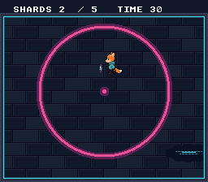

|
OpenSNES
Modern Open-Source SNES Development SDK
|
|
OpenSNES
Modern Open-Source SNES Development SDK
|
Game structure · testing.

The other examples are one file because each teaches one thing. A real game is not: it has screens, a save, and a way to be tested without a person holding the pad. This example is a short game (grab five shards in thirty seconds) written the way a bigger one should be: one C file per screen, one function per mode, one layer for what the screens share.
| File | Role |
|---|---|
| main.c | boot, the pump, and the sequence titleRun() -> playRun() -> resultRun() |
| screen.c/h | the screen layer: VBlank wait, VRAM queue flush, fades, pad edges, pump |
| title.c, play.c, result.c | one screen each, one xxxRun() function |
| save.c/h | a versioned, checksummed SRAM record |
| ui.c/h | text helpers the screens share |
| game.h | VRAM layout, the rules, the run's result |
A screen is: compose with the display off, screenShow(), loop on screenFrame() + screenPressed(), screenClose(). The rules the code shows, each commented where it applies:
testing/manifests/shard_dash_*.toml, run by make test-manifests:
| Manifest | What it checks |
|---|---|
| shard_dash_title | the title with the real fade-in: blank SRAM gives the defaults, the fade took 16 images, a picture hash |
| shard_dash_play | START, then a scripted walk through the five shards: positions, shard order, score |
| shard_dash_result_win | the same walk wins in 108 images; the result, the saved best, START back to the title |
| shard_dash_result_lose | a lost round (the clock runs out, nothing saved) with START held from the title on: the result must stay |
| shard_dash_fade | the real fade-out and fade-in: 16 images each, not forced blank, the pump running through them |
| shard_dash_save_1_write / _2_read / _3_corrupt | power-cycle: the record is written, reloaded by a new run, and a corrupted copy gives the defaults |
The manifests skip the fades with a [[poke]] of screen_fade_skip; only shard_dash_title and shard_dash_fade play them. The shards come from a table, so a round is the same every time and a scripted pad can play it.
The pictures are the ones of basics/game_skeleton (copied, not redrawn).
console, dma, background, sprite, text, input, vramqueue, debug, sram
Next to basics/game_skeleton (the same idea as a single switch), basics/scene_stack (the scene module), memory/save_game (raw SRAM) and transitions/fading (the fades).